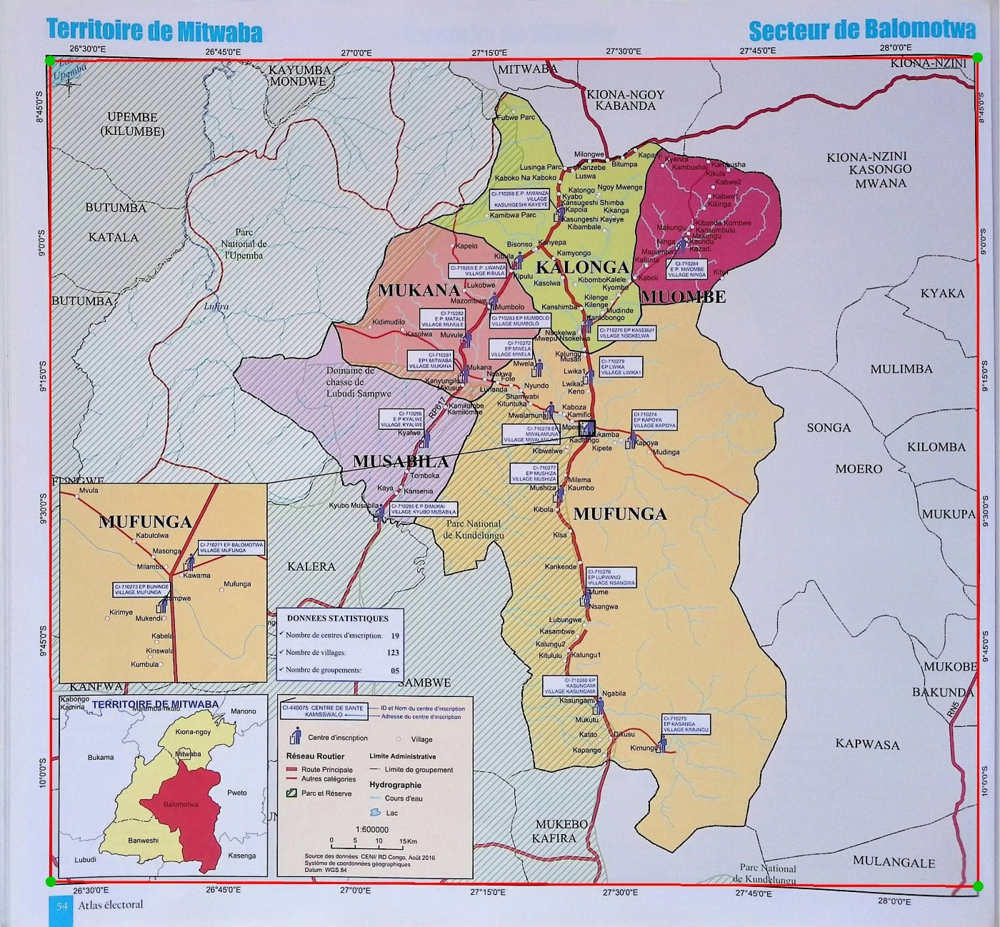
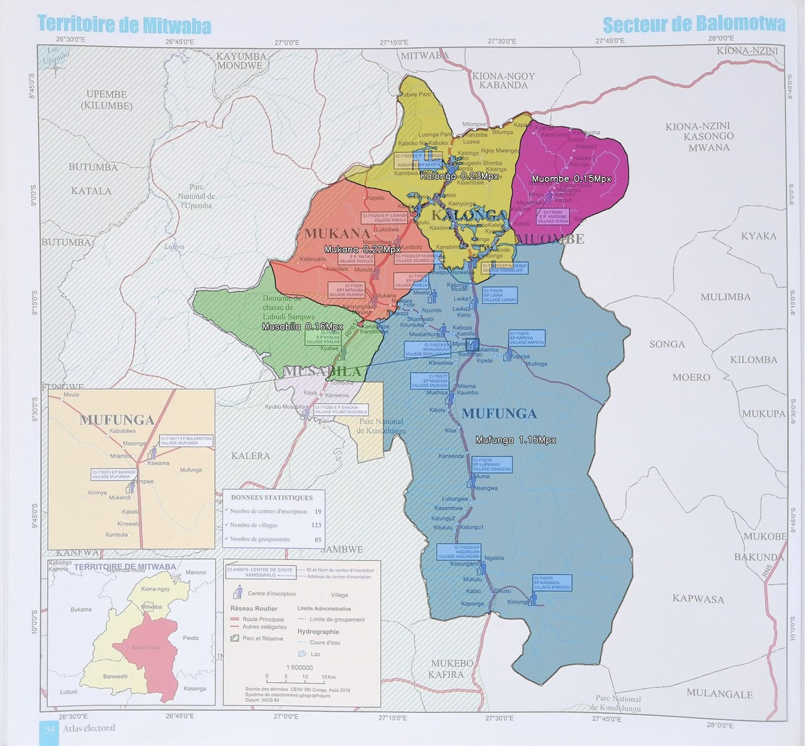
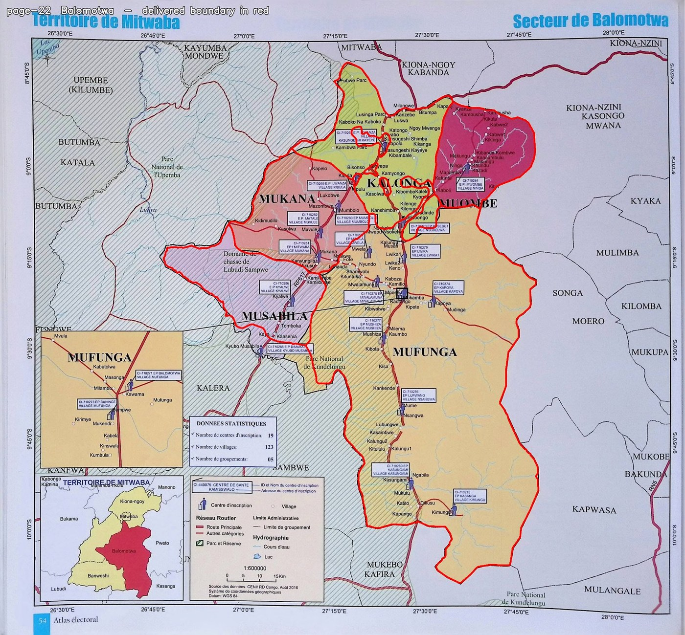
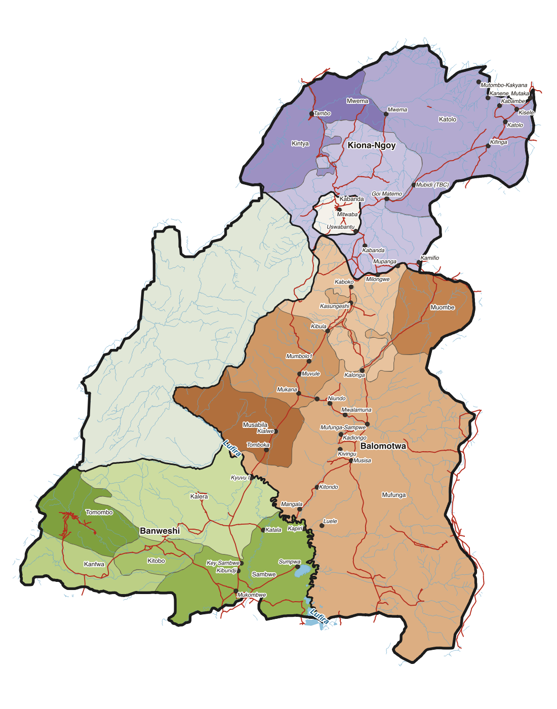
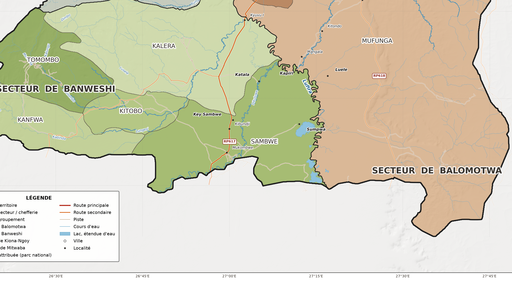

Administrative boundaries of Mitwaba Territory, Haut-Katanga, DR Congo, extracted from a 2016 printed electoral atlas via a 22-step automated Python pipeline and redrawn as a clean vector map on a modern terrain base.
The source was a scanned, bound atlas photographed at an angle. No coordinate metadata. No digital source. The pipeline detects graticule intersections automatically, builds GCPs from printed label values, segments boundary fills by colour, polygonises them, and produces a print-ready A0 output with an uncertainty note.
A0 final output, 1 territoire · 3 secteurs/chefferie · 14 groupements · 1:281,000
Territory area
19,842
km²
Admin units
14
groupements
Pipeline steps
22
Python scripts
01Source material
The only available record of Mitwaba's internal boundaries was the 2016 CENI electoral atlas, a printed book, photographed page by page. The images were tilted, the text at 8pt was too small for reliable OCR, and the coordinate grid labels had to be read manually then matched to automatically detected positions. No digital GIS source existed.
Atlas p.15, Province du Haut-Katanga overview. Mitwaba territoire top-left.Atlas p.12, Révision du fichier électoral 2016-2017, operational deployment maps
02Pipeline
22 numbered Python scripts, each with a single responsibility. The pipeline runs end-to-end and is fully reproducible from the raw scans.
01-02
Frame & graticule detection
Detect the neatline frame corners and the printed coordinate grid intersections using edge detection + Hough lines. Rectify each plate so the frame is axis-aligned before any measurement is taken.
03-04
GCP construction & GeoTIFF write
Coordinate label values read manually from margin strips; label positions detected automatically. Each graticule crossing becomes a ground control point. Output: a georeferenced GeoTIFF per plate in UTM Zone 35S.
05
Overlay verification
Warp each georeferenced plate onto an OSM basemap and measure residual offset at road intersections and river confluences as an independent accuracy check.
06-10
Colour segmentation → polygons
Each groupement is printed as a flat colour tint. Mask everything on top (roads, rivers, labels, legend boxes, park hatching). Cluster remaining pixels by colour, classify each cluster as a fill or background, polygonise, then harmonise topology across sector boundaries to remove gaps and overlaps.
11-12
Context & river check
Pull OSM roads, rivers, water bodies, and settlements. Flag boundary segments where the digitised line diverges from the OSM river by more than the expected accuracy (200-800 m at 1:281,000).
13-19
Map, QGIS project, packaging
Generate the A0 map layout, write the QGIS project with styled layers and relative paths, produce shapefiles, write the uncertainty note PDF, build the delivery manifest.
20-22
QA & independent checks
Independent georeferencing check on a different set of tie-points. Cross-sheet topology check across all sector plates. Residual error analysis to assess whether a denser GCP network would improve accuracy.
03Pipeline in progress
Each step produces a QA image. These are the Secteur de Balomotwa plate (atlas page 22).

Step 01, Neatline frame detected (red border). Green dots: graticule intersections auto-detected for GCP construction.Step 03, Ground control points built from coordinate labels. Red crosses placed at each latitude/longitude intersection.

Step 06-08, Colour segmentation result. Each groupement fill clustered and classified. Area in Mpx labelled per region.

Step 16, Final vector boundary (red) overlaid on the source atlas plate. Visual check of fit before delivery.
04Output

Clean vector, groupements by sector

Detail, Secteur de Banweshi southern boundary. The Lufira river forms the administrative divide between Banweshi and Balomotwa.
05Deliverables
MapA0 portrait PDF + PNG/JPG at 4966 × 7022 px, print-ready